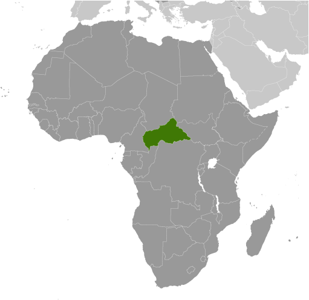
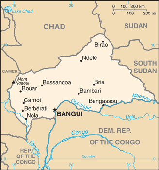
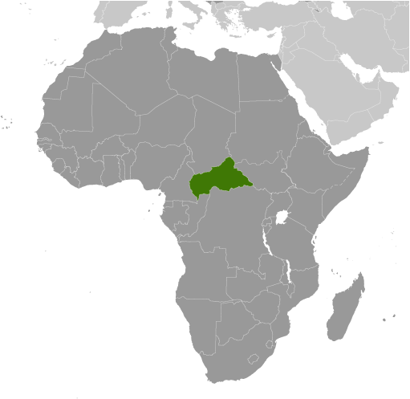
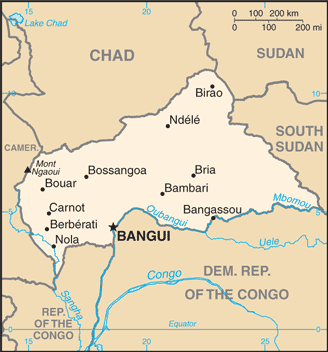

Africa :: CENTRAL AFRICAN REPUBLIC
Introduction :: CENTRAL AFRICAN REPUBLIC
-
The former French colony of Ubangi-Shari became the Central African Republic upon independence in 1960. After three tumultuous decades of misrule - mostly by military governments - civilian rule was established in 1993 but lasted only a decade. In March 2003, President Ange-Felix PATASSE was deposed in a military coup led by General Francois BOZIZE, who established a transitional government. Elections held in 2005 affirmed General BOZIZE as president; he was reelected in 2011 in voting widely viewed as flawed. The government still lacks full control of the countryside, where lawlessness persists. Several rebel groups joined together in early December 2012 to launch a series of attacks that left them in control of numerous towns in the northern and central parts of the country. The rebels - unhappy with BOZIZE's government - participated in peace talks in early January 2013 which resulted in a coalition government including the rebellion's leadership. In March 2013, the coalition government dissolved, rebels seized the capital, and President BOZIZE fled the country. Rebel leader Michel DJOTODIA assumed the presidency and the following month established a National Transitional Council (CNT). In January 2014, the CNT elected Catherine SAMBA-PANZA as interim president. Elections completed in March 2016 installed independent candidate Faustin-Archange TOUADERA as president; he continues to work towards peace between the government and armed groups, and is developing a disarmament, demobilization, reintegration, and repatriation (DDRR) program to reintegrate the armed groups into society.
Geography :: CENTRAL AFRICAN REPUBLIC
-
Central Africa, north of Democratic Republic of the Congo7 00 N, 21 00 EAfricatotal: 622,984 sq kmland: 622,984 sq kmwater: 0 sq kmcountry comparison to the world: 46slightly smaller than Texastotal: 5,920 kmborder countries (6): Cameroon 901 km, Chad 1,556 km, Democratic Republic of the Congo 1,747 km, Republic of the Congo 487 km, South Sudan 1,055 km, Sudan 174 km0 km (landlocked)none (landlocked)tropical; hot, dry winters; mild to hot, wet summersvast, flat to rolling plateau; scattered hills in northeast and southwestmean elevation: 635 melevation extremes: lowest point: Oubangui River 335 mhighest point: Mont Ngaoui 1,410 mdiamonds, uranium, timber, gold, oil, hydropoweragricultural land: 8.1%arable land 2.9%; permanent crops 0.1%; permanent pasture 5.1%forest: 36.2%other: 55.7% (2011 est.)10 sq km (2012)majority of residents live in the western and central areas of the country, especially in and around the capital of Banguihot, dry, dusty harmattan winds affect northern areas; floods are commontap water is not potable; poaching has diminished the country's reputation as one of the last great wildlife refuges; desertification; deforestationparty to: Biodiversity, Climate Change, Climate Change-Kyoto Protocol, Desertification, Endangered Species, Hazardous Wastes, Ozone Layer Protection, Tropical Timber 94, Wetlandssigned, but not ratified: Law of the Sealandlocked; almost the precise center of Africa
People and Society :: CENTRAL AFRICAN REPUBLIC
-
5,625,118note: estimates for this country explicitly take into account the effects of excess mortality due to AIDS; this can result in lower life expectancy, higher infant mortality, higher death rates, lower population growth rates, and changes in the distribution of population by age and sex than would otherwise be expected (July 2017 est.)country comparison to the world: 115noun: Central African(s)adjective: Central AfricanBaya 33%, Banda 27%, Mandjia 13%, Sara 10%, Mboum 7%, M'Baka 4%, Yakoma 4%, other 2%French (official), Sangho (lingua franca and national language), tribal languagesindigenous beliefs 35%, Protestant 25%, Roman Catholic 25%, Muslim 15%note: animistic beliefs and practices strongly influence the Christian majorityThe Central African Republic’s (CAR) humanitarian crisis has worsened since a coup in March 2013. CAR’s high mortality rate and low life expectancy are attributed to elevated rates of preventable and treatable diseases (including malaria and malnutrition), an inadequate health care system, precarious food security, and armed conflict. Some of the worst mortality rates are in western CAR’s diamond mining region, which is impoverished because of government attempts to control the diamond trade and the fall in industrial diamond prices. To make matters worse, the government and international donors have reduced health funding in recent years. The CAR’s weak educational system and low literacy rate have also suffered as a result of the country’s ongoing conflict. Schools are closed, qualified teachers are scarce, infrastructure, funding, and supplies are lacking and subject to looting, and many students and teachers are displaced by violence.Rampant poverty, human rights violations, unemployment, poor infrastructure, and a lack of security and stability have led to forced displacement internally and externally. Since the political crisis that resulted in CAR’s March 2013 coup began in December 2012, approximately 370,000 people have fled to Chad, the Democratic Republic of the Congo (DRC), and other neighboring countries, while more than an estimated 600,000 are displaced internally as of October 2017. The UN has urged countries to refrain from repatriating CAR refugees amid the heightened lawlessness.0-14 years: 40.09% (male 1,133,361/female 1,121,640)15-24 years: 19.94% (male 563,730/female 557,676)25-54 years: 32.45% (male 913,363/female 912,096)55-64 years: 4.1% (male 106,651/female 123,839)65 years and over: 3.43% (male 74,834/female 117,928) (2017 est.)total dependency ratio: 90youth dependency ratio: 83.1elderly dependency ratio: 7potential support ratio: 14.4 (2015 est.)total: 19.7 yearsmale: 19.4 yearsfemale: 20 years (2017 est.)country comparison to the world: 1952.12% (2017 est.)country comparison to the world: 4234.3 births/1,000 population (2017 est.)country comparison to the world: 2313.2 deaths/1,000 population (2017 est.)country comparison to the world: 110 migrant(s)/1,000 population (2017 est.)country comparison to the world: 78majority of residents live in the western and central areas of the country, especially in and around the capital of Banguiurban population: 40.6% of total population (2017)rate of urbanization: 2.73% annual rate of change (2015-20 est.)BANGUI (capital) 794,000 (2015)at birth: 1.03 male(s)/female0-14 years: 1.01 male(s)/female15-24 years: 1.01 male(s)/female25-54 years: 1 male(s)/female55-64 years: 0.84 male(s)/female65 years and over: 0.64 male(s)/femaletotal population: 0.98 male(s)/female (2016 est.)882 deaths/100,000 live births (2015 est.)country comparison to the world: 2total: 86.3 deaths/1,000 live birthsmale: 93.7 deaths/1,000 live birthsfemale: 78.7 deaths/1,000 live births (2017 est.)country comparison to the world: 3total population: 52.8 yearsmale: 51.4 yearsfemale: 54.2 years (2017 est.)country comparison to the world: 2174.3 children born/woman (2017 est.)country comparison to the world: 2815.2% (2010/11)4.2% of GDP (2014)country comparison to the world: 1620.05 physicians/1,000 population (2009)1 beds/1,000 population (2011)improved:urban: 89.6% of populationrural: 54.4% of populationtotal: 68.5% of populationunimproved:urban: 10.4% of populationrural: 45.6% of populationtotal: 31.5% of population (2015 est.)improved:urban: 43.6% of populationrural: 7.2% of populationtotal: 21.8% of populationunimproved:urban: 56.4% of populationrural: 92.8% of populationtotal: 78.2% of population (2015 est.)4% (2016 est.)country comparison to the world: 14130,000 (2016 est.)country comparison to the world: 337,300 (2016 est.)country comparison to the world: 25degree of risk: very highfood or waterborne diseases: bacterial and protozoal diarrhea, hepatitis A and E, and typhoid fevervectorborne diseases: malaria and dengue feverrespiratory disease: meningococcal meningitiswater contact disease: schistosomiasisanimal contact disease: rabies (2016)7.5% (2016)country comparison to the world: 15923.5% (2010)country comparison to the world: 261.2% of GDP (2011)country comparison to the world: 171definition: age 15 and over can read and writetotal population: 36.8%male: 50.7%female: 24.4% (2015 est.)total: 7 yearsmale: 8 yearsfemale: 6 years (2012)
Government :: CENTRAL AFRICAN REPUBLIC
-
conventional long form: Central African Republicconventional short form: nonelocal long form: Republique Centrafricainelocal short form: noneformer: Ubangi-Shari, Central African Empireabbreviation: CARetymology: self-descriptive name specifying the country's location on the continent; "Africa" is derived from the Roman designation of the area corresponding to present-day Tunisia "Africa terra," which meant "Land of the Afri" (the tribe resident in that area), but which eventually came to mean the entire continentpresidential republicname: Banguigeographic coordinates: 4 22 N, 18 35 Etime difference: UTC+1 (6 hours ahead of Washington, DC, during Standard Time)14 prefectures (prefectures, singular - prefecture), 2 economic prefectures* (prefectures economiques, singular - prefecture economique), and 1 commune**; Bamingui-Bangoran, Bangui**, Basse-Kotto, Haute-Kotto, Haut-Mbomou, Kemo, Lobaye, Mambere-Kadei, Mbomou, Nana-Grebizi*, Nana-Mambere, Ombella-Mpoko, Ouaka, Ouham, Ouham-Pende, Sangha-Mbaere*, Vakaga13 August 1960 (from France)Republic Day, 1 December (1958)history: several previous; latest (interim constitution) approved by the Transitional Council 30 August 2015, adopted by referendum 13-14 December 2015, ratified 27 March 2016amendments: proposals require support of the government, two-thirds of the National Council of Transition, and assent by the “Mediator of the Central African” crisis; passage requires at least three-fourths majority vote by the National Council membership; non-amendable constitutional provisions include those on the secular and republican form of government, fundamental rights and freedoms, amendment procedures, or changes to the authorities of various high-level executive, parliamentary, and judicial officials (2017)civil law system based on the French modelhas not submitted an ICJ jurisdiction declaration; accepts ICCt jurisdictioncitizenship by birth: nocitizenship by descent only: least one parent must be a citizen of the Central African Republicdual citizenship recognized: yesresidency requirement for naturalization: 35 years18 years of age; universalchief of state: President Faustin-Archange TOUADERA (since 30 March 2016)head of government: Prime Minister Simplice SARANDJI (since 2 April 2016)cabinet: Council of Ministers appointed by the presidentelections/appointments: under the new constitution, the president is elected by universal direct suffrage for a period of 5 years (eligible for a second term); election last held 20 February 2016 (next to be held in April 2021)election results: first round held on 30 December 2015, percent of vote - Anicet-Georges DOLOGUELE (URCA) 23.7%, Faustin-Archange TOUADERA (independent) 19.1%, Desire KOLINGBA (RDC) 12.0%, Martin ZIGUELE (MLPC) 11.4%, other 33.8%; second round held on 20 February 2016, percent of vote - Faustin-Archange TOUADERA 62.7%, Anicet-Georges DOLOGUELE 37.3%note: rebel forces seized the capital in March 2013, forcing former President BOZIZE to flee the country; Interim President Michel DJOTODIA assumed the presidency, reinstated the prime minister, and established a National Transitional Council (CNT) in April 2013; the NTC elected Catherine SAMBA-PANZA interim president in January 2014 to serve until February 2015 when new elections were to be held; her term was extended because instability delayed new elections and the transition did not take place until the end of March 2016description: unicameral National Assembly or Assemblee Nationale (131 seats; members directly elected in single-seat constituencies by absolute majority vote with a second round if needed; members serve 5-year terms)elections: last held 30 December 2015 (results annulled), 14 February 2016 - first round and 31 March 2016 - second round (next election to be held in 2021)election results: percent of vote by party - NA; seats by party - UNDP 16, URCA 11, RDC 8, MLPC 10, KNK 7, other 19, independent 60highest court(s): Supreme Court or Cour Supreme (consists of NA judges); Constitutional Court (consists of 9 judges, at least 3 of whom are women)judge selection and term of office: Supreme Court judges appointed by the president; Constitutional Court judge appointments - 2 by the president, 1 by the speaker of the National Assembly, 2 elected by their peers, 2 are advocates elected by their peers, and 2 are law professors elected by their peers; judges serve 7-year non-renewable termssubordinate courts: high courts; magistrates' courtsAction Party for Development or PADAlliance for Democracy and Progress or ADP [Clement BELIBANGA]Central African Democratic Rally or RDC [Desire Nzanga KOLINGBA]Movement for Democracy and Development or MDD [Louis PAPENIAH]Movement for the Liberation of the Central African People or MLPC [Martin ZIGUELE]National Convergence (also known as Kwa Na Kwa) or KNK [Francois BOZIZE]National Union for Democracy and Progress or UNDP [Amine MICHEL]New Alliance for Progress or NAP [Jean-Jacques DEMAFOUTH]Social Democratic Party or PSD [Enoch LAKOUE]Union for Central African Renewal or URCA [Anicet-Georges DOLOGUELE]ACP, AfDB, AU, BDEAC, CEMAC, EITI (compliant country) (suspended), FAO, FZ, G-77, IAEA, IBRD, ICAO, ICCt, ICRM, IDA, IFAD, IFC, IFRCS, ILO, IMF, Interpol, IOC, IOM, ITSO, ITU, ITUC (NGOs), MIGA, NAM, OIC (observer), OIF, OPCW, UN, UNCTAD, UNESCO, UNIDO, UNWTO, UPU, WCO, WHO, WIPO, WMO, WTOchief of mission: Ambassador Stanislas MOUSSA-KEMBE (since 24 August 2009)chancery: 2704 Ontario Road NW, Washington, DC 20009telephone: [1] (202) 483-7800FAX: [1] (202) 332-9893chief of mission: Ambassador (vacant); Charge d'Affaires David P. BROWNSTEIN (since September 2017)embassy: Avenue David Dacko, Banguimailing address: P.O. Box 924, Banguitelephone: [236] 21 61 0200FAX: [236] 21 61 4494four equal horizontal bands of blue (top), white, green, and yellow with a vertical red band in center; a yellow five-pointed star to the hoist side of the blue band; banner combines the Pan-African and French flag colors; red symbolizes the blood spilled in the struggle for independence, blue represents the sky and freedom, white peace and dignity, green hope and faith, and yellow tolerance; the star represents aspiration towards a vibrant futureelephant; national colors: blue, white, green, yellow, redname: "Le Renaissance" (The Renaissance)lyrics/music: Barthelemy BOGANDA/Herbert PEPPERnote: adopted 1960; Barthelemy BOGANDA wrote the anthem's lyrics and was the first prime minister of the autonomous French territory
Economy :: CENTRAL AFRICAN REPUBLIC
-
Subsistence agriculture, together with forestry and mining, remains the backbone of the economy of the Central African Republic (CAR), with about 60% of the population living in outlying areas. The agricultural sector generates more than half of GDP. Timber and diamonds account for most export earnings, followed by cotton. Important constraints to economic development include the CAR's landlocked geography, poor transportation system, largely unskilled work force, and legacy of misdirected macroeconomic policies. Factional fighting between the government and its opponents remains a drag on economic revitalization. Distribution of income is extraordinarily unequal. Grants from France and the international community can only partially meet humanitarian needs.Since 2009, the IMF has worked closely with the government to institute reforms that have resulted in some improvement in budget transparency, but other problems remain. The government's additional spending in the run-up to the 2011 election worsened CAR's fiscal situation. In 2012, the World Bank approved $125 million in funding for transport infrastructure and regional trade, focused on the route between CAR's capital and the port of Douala in Cameroon. In July 2016, the IMF approved a three-year extended credit facility valued at $116 million. The World Bank in late 2016 approved a $20 million grant to restore basic fiscal management, improve transparency, and assist with economic recovery.Participants in the Kimberley Process, a commitment to remove conflict diamonds from the global supply chain, partially lifted the ban on diamond exports from CAR in 2015, but persistent insecurity will prevent GDP from recovering to its pre-2013 level.$3.185 billion (2016 est.)$3.009 billion (2015 est.)$2.84 billion (2014 est.)note: data are in 2016 dollarscountry comparison to the world: 185$1.78 billion (2016 est.)4.5% (2016 est.)4.8% (2015 est.)1% (2014 est.)country comparison to the world: 48$700 (2016 est.)$600 (2015 est.)$600 (2014 est.)note: data are in 2016 dollarscountry comparison to the world: 2294.6% of GDP (2016 est.)4.9% of GDP (2015 est.)4.6% of GDP (2014 est.)country comparison to the world: 165household consumption: 96.4%government consumption: 7.3%investment in fixed capital: 13.6%investment in inventories: 0%exports of goods and services: 12.7%imports of goods and services: -30% (2016 est.)agriculture: 42.9%industry: 16%services: 41.1% (2016 est.)cotton, coffee, tobacco, cassava (manioc, tapioca), yams, millet, corn, bananas; timbergold and diamond mining, logging, brewing, sugar refining2% (2016 est.)country comparison to the world: 1072.194 million (2016 est.)country comparison to the world: 1218% (2001 est.)note: 23% unemployment in the capital, Banguicountry comparison to the world: 102NA%lowest 10%: 2.1%highest 10%: 33% (2003)61.3 (1993)country comparison to the world: 3revenues: $250.4 millionexpenditures: $226.6 million (2016 est.)14.1% of GDP (2016 est.)country comparison to the world: 1981.3% of GDP (2016 est.)country comparison to the world: 1942.5% of GDP (2016 est.)48.5% of GDP (2015 est.)country comparison to the world: 125calendar year4.6% (2016 est.)37.1% (2015 est.)country comparison to the world: 1724.25% (31 December 2009)4.75% (31 December 2008)country comparison to the world: 8615.5% (31 December 2016 est.)15.5% (31 December 2015 est.)country comparison to the world: 37$342.9 million (31 December 2016 est.)$340.9 million (31 December 2015 est.)country comparison to the world: 174$432.4 million (31 December 2016 est.)$426.7 million (31 December 2015 est.)country comparison to the world: 187$458.5 million (31 December 2016 est.)$444.4 million (31 December 2015 est.)country comparison to the world: 178$NA$-161 million (2016 est.)$-143.2 million (2015 est.)country comparison to the world: 78$101.5 million (2016 est.)$82 million (2015 est.)country comparison to the world: 196diamonds, timber, cotton, coffeeBelarus 33.5%, Germany 15.3%, France 14.2%, Chad 12.6%, Cameroon 9.7%, China 8.1% (2016)$340.8 million (2016 est.)$341.2 million (2015 est.)country comparison to the world: 197food, textiles, petroleum products, machinery, electrical equipment, motor vehicles, chemicals, pharmaceuticalsEgypt 29.8%, France 18.6%, China 6.8%, Belgium 5.7%, Cameroon 5.4% (2016)$691.5 million (31 December 2016 est.)$661.8 million (31 December 2015 est.)country comparison to the world: 173Cooperation Financiere en Afrique Centrale francs (XAF) per US dollar -593.01 (2016 est.)593.01 (2015 est.)591.45 (2014 est.)494.42 (2013 est.)510.53 (2012 est.)
Energy :: CENTRAL AFRICAN REPUBLIC
-
population without electricity: 4,500,000electrification - total population: 3%electrification - urban areas: 5%electrification - rural areas: 1% (2013)174 million kWh (2015 est.)country comparison to the world: 193161.8 million kWh (2015 est.)country comparison to the world: 1950 kWh (2016 est.)country comparison to the world: 1240 kWh (2016 est.)country comparison to the world: 13744,000 kW (2015 est.)country comparison to the world: 19643.2% of total installed capacity (2015 est.)country comparison to the world: 1650% of total installed capacity (2015 est.)country comparison to the world: 7256.8% of total installed capacity (2015 est.)country comparison to the world: 300% of total installed capacity (2015 est.)country comparison to the world: 1770 bbl/day (2016 est.)country comparison to the world: 1220 bbl/day (2014 est.)country comparison to the world: 1090 bbl/day (2014 est.)country comparison to the world: 1140 bbl (1 January 2017 es)country comparison to the world: 1220 bbl/day (2014 est.)country comparison to the world: 1313,000 bbl/day (2015 est.)country comparison to the world: 1880 bbl/day (2014 est.)country comparison to the world: 1452,828 bbl/day (2014 est.)country comparison to the world: 1810 cu m (2013 est.)country comparison to the world: 1230 cu m (2013 est.)country comparison to the world: 1710 cu m (2013 est.)country comparison to the world: 880 cu m (2013 est.)country comparison to the world: 1120 cu m (1 January 2014 es)country comparison to the world: 129400,000 Mt (2013 est.)country comparison to the world: 186
Communications :: CENTRAL AFRICAN REPUBLIC
-
total subscriptions: 1,964subscriptions per 100 inhabitants: less than 1 (July 2016 est.)country comparison to the world: 216total: 982,000subscriptions per 100 inhabitants: 18 (July 2016 est.)country comparison to the world: 155general assessment: network consists principally of microwave radio relay and low-capacity, low-powered radiotelephone communicationdomestic: very limited telephone service with less than 1 fixed-line connection per 100 persons; spurred by the presence of multiple mobile-cellular service providers, cellular usage is increasing from a low base; most fixed-line and mobile-cellular telephone services are concentrated in Banguiinternational: country code - 236; satellite earth station - 1 Intelsat (Atlantic Ocean) (2015)government-owned network, Radiodiffusion Television Centrafricaine, provides limited domestic TV broadcasting; state-owned radio network is supplemented by a small number of privately owned broadcast stations as well as a few community radio stations; transmissions of at least 2 international broadcasters are available (2017).cftotal: 246,000percent of population: 4.6% (July 2016 est.)country comparison to the world: 157
Transportation :: CENTRAL AFRICAN REPUBLIC
-
number of registered air carriers: 2inventory of registered aircraft operated by air carriers: 2annual passenger traffic on registered air carriers: 46,364annual freight traffic on registered air carriers: 0 mt-km (2015)TL (2016)39 (2013)country comparison to the world: 106total: 22,438 to 3,047 m: 11,524 to 2,437 m: 1 (2017)total: 372,438 to 3,047 m: 11,524 to 2,437 m: 11914 to 1,523 m: 19under 914 m: 6 (2013)total: 20,278 kmpaved: 1,385 kmunpaved: 18,893 km (2010)country comparison to the world: 1072,800 km (the primary navigable river is the Ubangi, which joins the River Congo; it was the traditional route for the export of products because it connected with the Congo-Ocean railway at Brazzaville; because of the warfare on both sides of the River Congo from 1997, importers and exporters preferred routes through Cameroon) (2011)country comparison to the world: 34river port(s): Bangui (Oubangui); Nola (Sangha)
Military and Security :: CENTRAL AFRICAN REPUBLIC
-
Central African Armed Forces (Forces Armees Centrafricaines, FACA): Ground Forces (includes Military Air Service), General Directorate of Gendarmerie Inspection (DGIG), National Police (2017)18 years of age for military service; no conscription (2017)
Transnational Issues :: CENTRAL AFRICAN REPUBLIC
-
periodic skirmishes persist over water and grazing rights among related pastoral populations along the border with southern SudanIDPs: 600,250 (clashes between army and rebel groups since 2005; tensions between ethnic groups) (2017)current situation: Central African Republic (CAR) is a source, transit, and destination country for children subjected to forced labor and sex trafficking, women subjected to forced prostitution, and adults subjected to forced labor; most victims appear to be CAR citizens exploited within the country, with a smaller number transported back and forth between the CAR and nearby countries; armed groups operating in the CAR, including those aligned with the former SELEKA Government and the Lord’s Resistance Army, continue to recruit and re-recruit children for military activities and labor; children are also subject to domestic servitude, commercial sexual exploitation, and forced labor in agriculture, mines, shops, and street vending; women and girls are subject to domestic servitude, sexual slavery, commercial sexual exploitation, and forced marriagetier rating: Tier 3 – the Central African Republic does not fully comply with the minimum standards for the elimination of trafficking and is not making significant efforts to do so; the government conducted a limited number of investigations and prosecutions of cases of suspected human trafficking in 2014 but did not identify, provide protection to, or refer to care providers any trafficking victims; the government did not directly provide reintegration programs for demobilized child soldiers, leaving victims vulnerable to further exploitation or retrafficking by armed groups, including those affiliated with the government; in 2014, an NGO and the government began drafting a national action plan against trafficking but no efforts were reported to establish a policy against child soldiering or to raise awareness about existing laws prohibiting the use of children in the armed forces (2015)